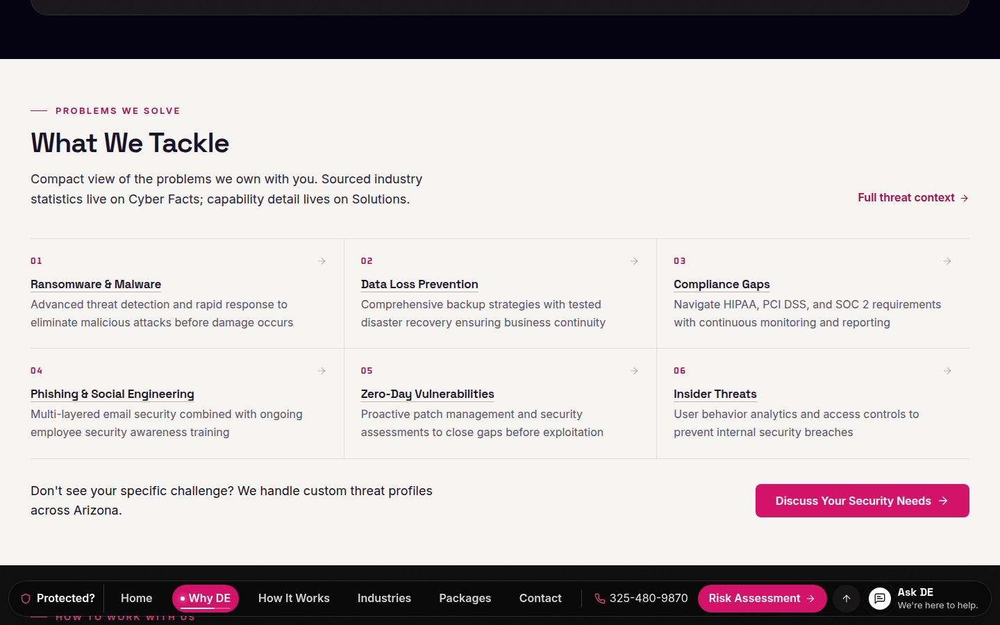

Bottom bar · autohide
Same bar, same links, same look as live. It now tucks into the Ask DE button when you are reading down, and comes back on any sign you want it. It never hides while you are using it.
Ask DE only, as live. Nothing competes with the hero.
The chapter dock opens. The active chapter carries a thin read-progress line.
After 160px of steady reading it tucks into the Ask DE button. Small wobbles never trigger it.
One deliberate scroll up (32px) brings it straight back, on the right chapter.

Rest the pointer near the bottom edge and it returns. Hovering, Tab focus and chapter jumps hold it open.
Always shown at the contact chapter, where people look for the phone and the ask.
Back-to-top tucks; Ask DE stays as the round button.
Ask DE and back-to-top return.
The bar steps below the keyboard while a field has focus, and returns on blur.